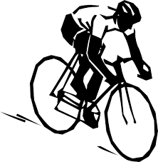

About Me

Hello! My name is Lee and I am an aspiring web developer currently enrolled on the Tech Educators bootcamp.
Where I'm from
I live in Cambridgeshire, in a village about 9 miles south of Cambridge called Duxford to be exact. Duxford is best known for its airfield which played an important part in the Battle of Britain during World War II and is now home to a branch of the Imperial War Musuem.
Work and education
I spent some time working for the high street pharmacy Boots in the operations team which contributes towards the day-to-day running of the shop.

Previously I studied Film Studies at the University of Derby where I achieved a BA Hons degree.
Volunteering experience
- Cambridge Film Festival
- Doc & Roll Music and Film Festival
- Charity quiz nights for CamSight
Hobbies and interests
I am also a keen cyclist and enjoy cycling around the Cambridgeshire countryside on my road bike.
My top ten films are:
- Mulholland Drive (2001, dir. David Lynch)
- Fargo (1996, dir. Joel Coen)
- Taxi Driver (1978, dir. Martin Scorese)
- Distant Voices, Still Lives (1988, dir. Terrence Davies)
- This is Spinal Tap (1984, dir. Rob Reiner)
- The Godfather (1973, dir. Francis Ford Coppola)
- Blade Runner (1978, dir. Ridley Scott)
- Parasite (2019, dir. Bong Joon-ho)
- Under the Skin (2013, dir. Jonathan Glazer)
- Midsommar (2019, dir. Ari Aster)